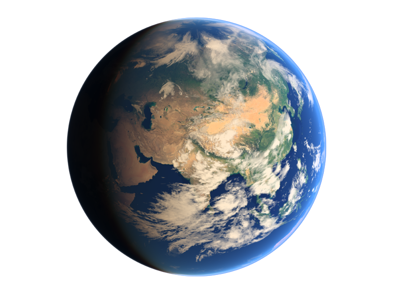

COMENCEMOS
Mercurio es el planeta del sistema solar más próximo al Sol y el más pequeño.
Forma parte de los denominados planetas interiores o terrestres y carece de satélites naturales al igual que Venus.
Se conocía muy poco sobre su superficie hasta que fue enviada la sonda planetaria Mariner 10
y se hicieron observaciones con radar y radiotelescopios.
Diametro : 4879,4 km
Densidad: 5,43 g/cm³
Área de superficie: 7,5 × 107 km²
Gravedad: 3,7 m/s²1 y 0,38 g
Más info!
Venus es el segundo planeta del sistema solar en orden de distancia desde el Sol, el sexto en cuanto a tamaño, ordenados de mayor a menor. Al igual que Mercurio, carece de satélites naturales. Recibe su nombre en honor a Venus, la diosa romana del amor (gr. Afrodita). Se trata de un planeta de tipo rocoso y terrestre, llamado con frecuencia el planeta hermano de la Tierra, ya que ambos son similares en cuanto a tamaño, masa y composición , aunque totalmente diferentes en cuestiones térmicas y atmosféricas (la temperatura media de Venus es de 463,85 ºC).
La Tierra (del latín Terra, deidad romana equivalente a Gea, diosa griega de la feminidad y la fecundidad) es un planeta del sistema solar que gira alrededor de su estrella —el Sol— en la tercera órbita más interna. Es el más denso y el quinto mayor de los ocho planetas del sistema solar. También es el mayor de los cuatro terrestres o rocosos. La Tierra se formó hace aproximadamente 4550 millones de años y la vida surgió unos mil millones de años después. Es el hogar de millones de especies, incluidos los seres humanos y actualmente el único cuerpo astronómico donde se conoce la existencia de vida. La atmósfera y otras condiciones abióticas han sido alteradas significativamente por la biosfera del planeta, favoreciendo la proliferación de organismos aerobios, así como la formación de una capa de ozono que junto con el campo magnético terrestre bloquean la radiación solar dañina, permitiendo así la vida n la Tierra. Las propiedades físicas de la Tierra, la historia geológica y su órbita han permitido que la vida siga existiendo. Se estima que el planeta seguirá siendo capaz de sustentar vida durante otros 500 millones de años
Marte es el cuarto planeta en orden de distancia al Sol y el segundo más pequeño del sistema solar, después de Mercurio. Recibió su nombre en homenaje al dios de la guerra de la mitología romana (Ares en la mitología griega), y también es conocido como «el planeta rojo» debido a la apariencia rojiza que le confiere el óxido de hierro predominante en su superficie. Marte es el planeta interior más alejado del Sol. Es un planeta telúrico con una atmósfera delgada de dióxido de carbono, y posee dos satélites pequeños y de forma irregular, Fobos y Deimos (hijos del dios griego), que podrían ser asteroides capturados similares al asteroide troyano (5261) Eureka. Sus características superficiales recuerdan tanto a los cráteres de la Luna como a los valles, desiertos y casquetes polares de la Tierra.
Júpiter es el quinto planeta del sistema solar. Forma parte de los denominados planetas exteriores o gaseosos. Recibe su nombre del dios romano Júpiter (Zeus en la mitología griega). Se trata del planeta que ofrece un mayor brillo a lo largo del año dependiendo de su fase. Es, además, después del Sol, el mayor cuerpo celeste del sistema solar, con una masa casi dos veces y media la de los demás planetas juntos (con una masa 318 veces mayor que la de la Tierra y tres veces mayor que la de Saturno, además de ser, en cuanto a volumen, 1317 veces más grande que la Tierra). También es el planeta más antiguo del sistema solar, siendo incluso más antiguo que el sol; este descubrimiento fue realizado por investigadores de la universidad de Münster en Alemania.
Saturno es el sexto planeta del sistema solar contando desde el Sol, el segundo en tamaño y masa después de Júpiter y el único con un sistema de anillos visible desde la Tierra. Su nombre proviene del dios romano Saturno. Forma parte de los denominados planetas exteriores o gaseosos. El aspecto más característico de Saturno son sus brillantes anillos. Antes de la invención del telescopio, Saturno era el más lejano de los planetas conocidos y, a simple vista, no parecía luminoso ni interesante. El primero en observar los anillos fue Galileo en 1610,1 pero la baja inclinación de los anillos y la baja resolución de su telescopio le hicieron pensar en un principio que se trataba de grandes lunas. Christiaan Huygens, con mejores medios de observación, pudo en 1659 observar con claridad los anillos.
Urano es el séptimo planeta del sistema solar, el tercero de mayor tamaño, y el cuarto más masivo. Se llama así en honor de la divinidad griega del cielo Urano (del griego antiguo Οὐρανός), el padre de Crono (Saturno) y el abuelo de Zeus (Júpiter). Aunque es detectable a simple vista en el cielo nocturno, no fue catalogado como planeta por los astrónomos de la antigüedad debido a su escasa luminosidad y a la lentitud de su órbita. Sir William Herschel anunció su descubrimiento el 13 de marzo de 1781, ampliando las fronteras entonces conocidas del sistema solar, por primera vez en la historia moderna. Urano es también el primer planeta descubierto por medio de un telescopio.
Neptuno es el octavo planeta en distancia respecto al Sol y el más lejano del sistema solar. Forma parte de los denominados planetas exteriores, y dentro de estos, es uno de los gigantes helados, y es el primero que fue descubierto gracias a predicciones matemáticas. Su nombre fue puesto en honor al dios romano del mar —Neptuno—, y es el cuarto planeta en diámetro y el tercero más grande en masa. Su masa es diecisiete veces la de la Tierra y ligeramente mayor que la de su planeta «gemelo» Urano, que tiene quince masas terrestres y no es tan denso. En promedio, Neptuno orbita el Sol a una distancia de 30,1 ua. Su símbolo astronómico es ♆, una versión estilizada del tridente del dios Neptuno. Tras el descubrimiento de Urano, se observó que las órbitas de Urano, Saturno y Júpiter no se comportaban tal como predecían las leyes de Kepler y de Newton. Adams y Le Verrier, de forma independiente, calcularon la posición de un hipotético planeta, Neptuno, que finalmente fue encontrado por Galle, el 23 de septiembre de 1846, a menos de un grado de la posición calculada por Le Verrier. Más tarde se advirtió que Galileo ya había observado Neptuno en 1612, pero lo había confundido con una estrella.
Plutón, designado (134340) Pluto, es un planeta enano del sistema solar situado a continuación de la órbita de Neptuno. Su nombre se debe al dios mitológico romano Plutón (Hades según la mitología griega). En la Asamblea General de la Unión Astronómica Internacional celebrada en Praga el 24 de agosto de 2006 se creó una nueva categoría llamada plutoide, en la que se incluye a Plutón. Es también el prototipo de una categoría de objetos transneptunianos denominada plutinos. Plutón posee una órbita excéntrica y altamente inclinada con respecto a la eclíptica, que recorre acercándose en su perihelio hasta el interior de la órbita de Neptuno. Asimismo posee también cinco satélites: Caronte, Nix, Hidra, Cerbero y Estigia, los cuales son cuerpos celestes que comparten esa misma categoría